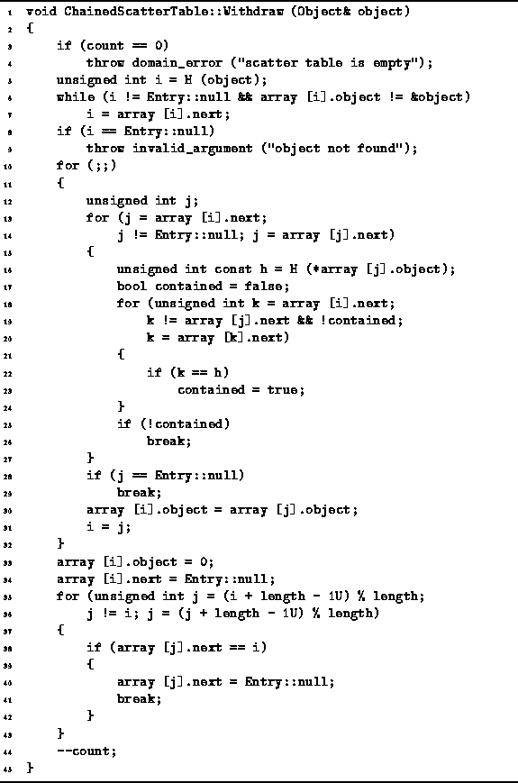
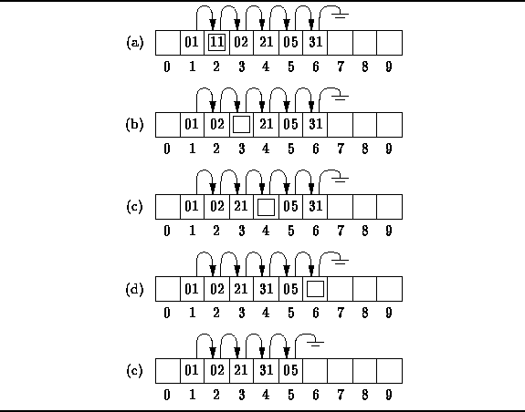

Data Structures and Algorithms
with Object-Oriented Design Patterns in C++
Data Structures and Algorithms
with Object-Oriented Design Patterns in C++Removing items from a chained scatter table is more complicated than putting them into the table. The goal when removing an item is to have the scatter table end up exactly as it would have appeared had that item never been inserted in the first place. Therefore, when an item is removed from the middle of a chain, items which follow it in the chain have to be moved up to fill in the hole. However, the moving-up operation is complicated by the fact that several chains may have coalesced.
Program  gives an implementation of the
Withdraw member function of the ChainedScatterTable class.
The algorithm begins by checking that the table is not empty (lines 3-4).
To remove an item, we first have to find it.
This is what the loop on lines 5-7 does.
If the item to be deleted is not in the table,
when this loop terminates the variable i has the value null
and an exception is thrown (lines 8-9).
Otherwise, the item a position i in the table is to be removed.
gives an implementation of the
Withdraw member function of the ChainedScatterTable class.
The algorithm begins by checking that the table is not empty (lines 3-4).
To remove an item, we first have to find it.
This is what the loop on lines 5-7 does.
If the item to be deleted is not in the table,
when this loop terminates the variable i has the value null
and an exception is thrown (lines 8-9).
Otherwise, the item a position i in the table is to be removed.

Program: ChainedScatterTable Class Withdraw Member Function Definition
The purpose of the loop on lines 10-32 is to fill in the hole in the chain which results when the item at position i is removed by moving up items which follow it in the chain. What we need to do is to find the next item which follows the item at i that is safe to move into position i. The loop on lines 13-27 searches the rest of the chain following the item at i to find an item which can be safely moved.
Figure illustrates the basic idea.
The figures shows a chained scatter table of length ten
that contains integer-valued keys.
There is a single chain as shown in the figure.
However, notice that the values in the chain are not all equal modulo 10.
In fact, this chain must have resulted from the coalescing of three chains--one which begins in position 1,
one which begins in position 2, and one which begins in position 5.

Figure: Removing Items from a Chained Scatter Table
Suppose we wish to remove item 11 which is in position 2,
which is indicated by the box in Figure (a).
To delete it, we must follow the chain to find the next item that can
be moved safely up to position 2.
Item 02 which follows 11 and can be moved safely up to position 2
because that is the location to which it hashes.
Moving item 02 up moves the hole down the list to position 3
(Figure (b)).
Again we follow the chain to find that item 21 can be moved safely up
giving rise to the situation in Figure (c).
Now we have a case where an item cannot be moved.
Item 05 is the next candidate to be moved.
However, it is in position 5 which is the position to which it hashes.
If we were to move it up,
then it would no longer be in the chain which emanates from position 5.
In effect, the item would no longer be accessible!
Therefore, it cannot be moved safely.
Instead, we must move item 31 ahead of item 5
as shown in Figure (d).
Eventually, the hole propagates to the end of the chain,
where it can be delete easily (Figure (e)).
The loop on lines 13-27 of Program
finds the position j of an item which can be safely moved
to position i.
The algorithm makes use of the following fact:
An item can be safely moved up
only if it does not hash to a position
which appears in the linked list between i and j.
This is what the code on lines 16-24 tests.
When execution reaches line 28, either we have found an item which can be safely moved, or there does not exist such an item. If an item is found, it is moved up (lines 30-31) and we repeat the whole process again. On the other hand, if there are no more items to be moved up, then the process is finished and the main loop (lines 10-32) terminates.
The statements on lines 33-34 do the actual deed of removing the data from the position which i which by now is at the end of the chain. The final task to be done is to remove the pointer to position i, since there is no longer any data at that position. That is the job of the loop on lines 35-43.
 Copyright © 1997 by Bruno R. Preiss, P.Eng. All rights reserved.
Copyright © 1997 by Bruno R. Preiss, P.Eng. All rights reserved.